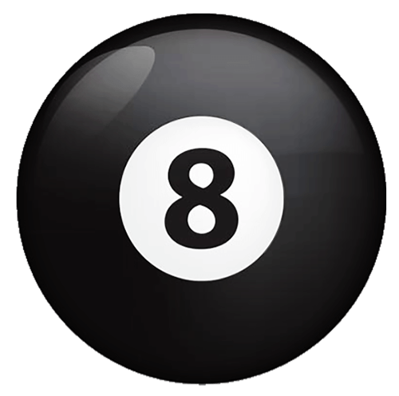

Random Number Generator
Welcome to the Magic 8 Ball. Write out your question in the top text box.
After the text is written, press the button to recive an answer. Make sure to use a question mark or the question is invalid.

Click here to return to my home page.